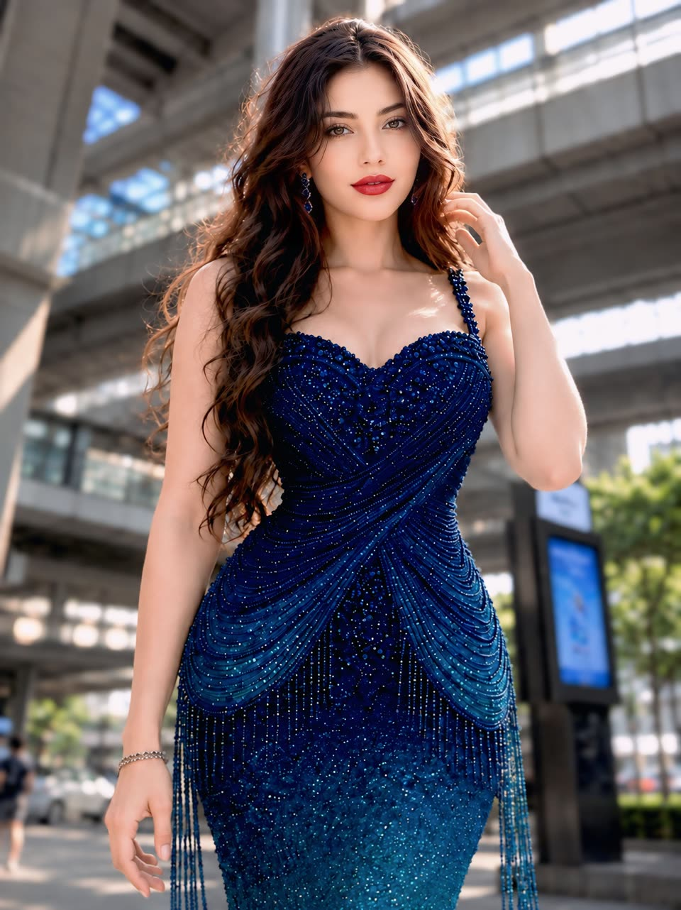

Royal-blue and teal beaded evening gown against raw concrete transit architecture: daylight street editorial
WRD-092WardrobeGPT Image 2by @AyeshaEvie2026-11-19

A short, well-ordered GPT Image 2 wardrobe prompt: the garment is specified by construction (fitted beaded gown, sweetheart neckline, draped waist, hanging bead fringe), the accessories are kept minimal (blue drop earrings, a delicate bracelet) and the setting is a deliberate contrast (an elevated concrete transit structure in natural daylight). Good start frame for a gown-movement shot.
Prompt
Glamorous woman with long, wavy dark brown hair and bold red lipstick posing outdoors against a modern concrete elevated transit structure and city street, wearing a fitted royal blue and teal beaded evening gown with a sweetheart neckline, draped waist, and hanging bead fringe, left hand raised near her hair, subtle blue drop earrings and a delicate bracelet, natural daylight, shallow depth of field, medium shot, photorealistic editorial portrait.
Our Seedance 2.5 adaptation
[ADAPTED for Seedance 2.5 by Grok Bot; not the creator's prompt. Follows the official BytePlus Seedance 2.5 prompt guide and its official sd25-pe prompt-optimizer skill: parameters only on the API line (not in the prompt body), subject + action + scene, then visuals, camera (move, subject, start, direction, arrival) and sound; only the source's own exclusions are kept.] API: duration 5, ratio 3:4 (taken from the first frame), resolution 1080p (4k for a final), generate_audio true; first_frame = the WRD-092 still. 【Subject】The woman as in the first frame: long wavy dark-brown hair, bold red lipstick, fitted royal-blue and teal beaded evening gown with a sweetheart neckline, draped waist and hanging bead fringe, blue drop earrings. 【Action】She lowers her raised hand from her hair, turns a quarter toward camera and takes two slow steps along the pavement; the bead fringe swings and settles with each step and catches the daylight. 【Scene】The modern concrete elevated transit structure and city street behind her, unchanged. 【Camera】Medium shot at chest height; slow lateral track left with her steps, then holds; shallow depth of field. 【Visuals】Natural daylight, photorealistic editorial look; real bead weight and sway, no added sparkle. 【Sound】City street ambience, a train passing overhead, the soft clatter of beads.
Tags: GPT Image 2, ChatGPT, evening gown, beaded fringe, sweetheart neckline, royal blue / teal, concrete architecture, daylight editorial, image